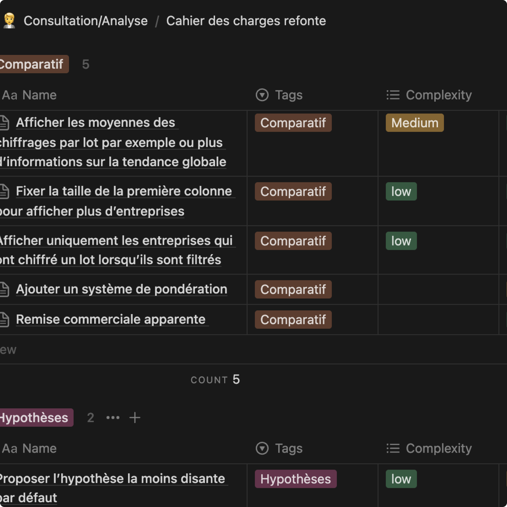
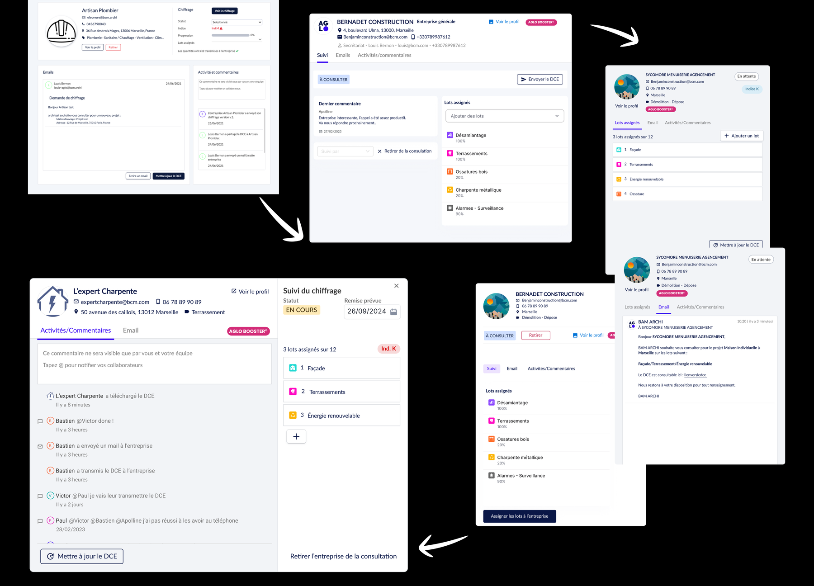
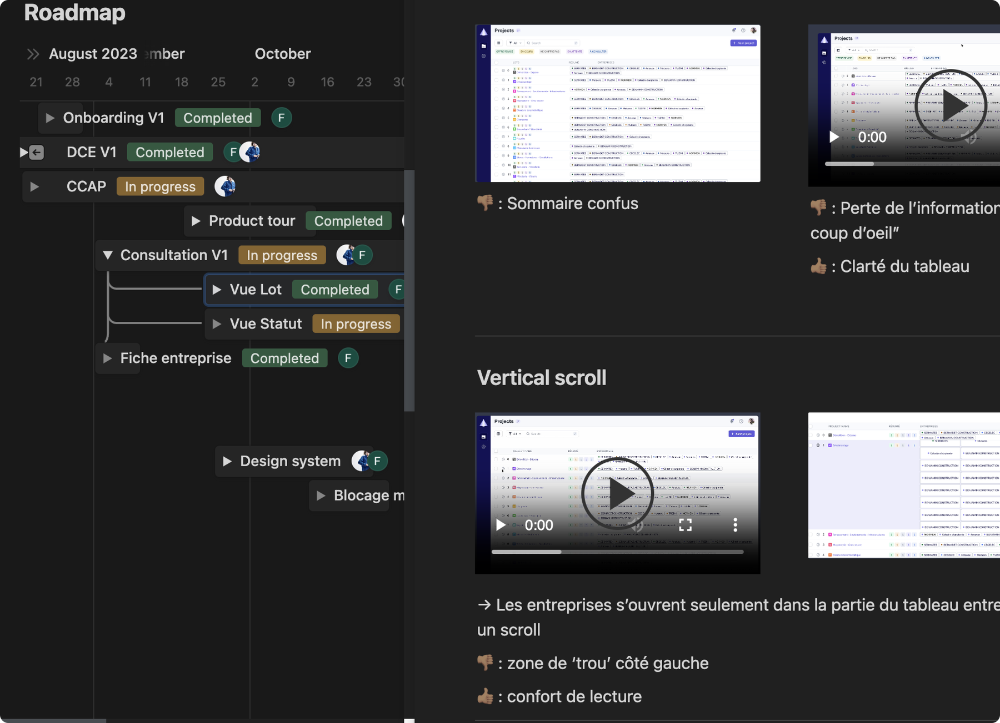
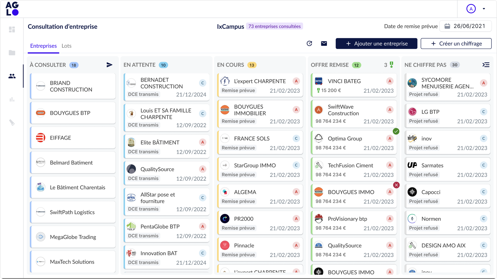

Structurer un système de gestion des entreprises consultées lors d'appels d'offres privés, permettant à la fois l'auto-intégration des entreprises et le pilotage interne du suivi.
UX Researcher
UI Designer
Farah Laoud, Product Designer
Louis Bernon, Product Manager
Équipe Concours (AMO)
Because Architecture Matters pilote des concours d'architecture internationaux à forte visibilité, dont la rénovation de la chambre des notaires de Paris et l'extension du Château de Beaucastel. La mission consistait à recueillir les exigences des utilisateurs AGLO sur les consultations d'entreprises, et à les mettre en corrélation avec celles des assistants à maîtrise d'ouvrage de l'équipe Concours.

État des lieux / recueil et priorisation du besoin interne avant conception.

Itérations pilotées / arbitrage entre parties prenantes multiples et retours variés, situation structurellement fréquente en design produit.

Alignement transverse / roadmap produit sur Notion, documentant décisions et retours pour fiabiliser l'alignement inter-équipes semaine après semaine.

Avant / après / refonte de l'ergonomie de la vue Entreprises, à périmètre fonctionnel maîtrisé pour optimiser le temps de développement.
Maquettes validées et testées en conditions réelles par l'équipe Concours de Because Architecture Matters. Le tableau conçu pour la consultation d'entreprise a été réutilisé à l'identique pour la rédaction des pièces écrites / un choix de cohérence de Design System qui a évité des développements redondants sur l'ensemble du projet.